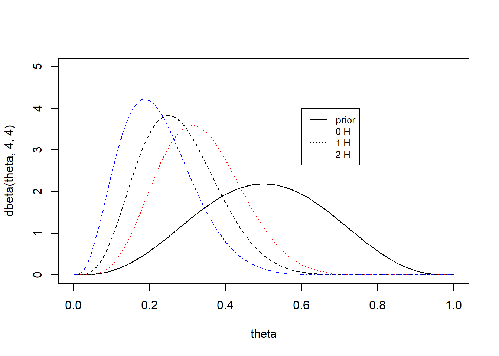

Chapter 3 Single parameter models
3.1 Estimating a probability from binomial data
\[\begin{equation} p(y | \theta) = {n \choose y}\theta^y(1-\theta)^{n-y} \tag{3.1} \end{equation}\]
To perform Bayesian inference we assume \(\theta \sim U(0,1)\) where the posterior is
\[\begin{equation} p(\theta | y) \propto \theta^y(1-\theta)^{n-y} \tag{3.2} \end{equation}\]
which is the form of a beta distribution \(\theta | y \sim Beta(y+1, n-y+1)\)
3.2 Posterior as a compromise between data and prior information
The posterior is less variable than the prior because it incorporates the information from the data.
\[\begin{equation} E(\theta) = E(E(\theta | y)) \tag{3.3} \end{equation}\]
\[\begin{equation} V(\theta) = E(V(\theta|y)) + V(E(\theta | y)) \tag{3.4} \end{equation}\]
where \(\theta|y\) is the posterior. So the average of the prior, is the average of the posterior means over the distribution of possible data. The variance of the prior (3.4) says the posterior variance is on average smaller than the prior variance.
3.3 Summarizing the posterior inference
The mean, median, mode, and standard deviation of the posterior distribution summarize the all the current information about a model.
Posterior quantiles and intervals
The posterior uncertainty can be reported by presenting the quantiles of the posterior distribution. The interval, a central interval of posterior probability corresponds to the case of 100(\(1-\alpha)\%\), to the range of values above and below which lies exactly 100(\(\alpha/2)\%\) of the posterior probability. The interval estimates are posterior intervals. This differences from the confidence interval because the confidence interval is not a probability interval, because either the parameter is within the region or it is not, but the confidence interval provides information in the long run over repeated experimentation as to how many experiments would contain the true parameter.
There is also the highest posterior interval which is a probabilistic interval that is not less than any region outside of the interval.
3.4 Informative prior distributions
the property that the posterior distribution follows the same parametric form as the prior distribution is called conjugacy. Where the beta prior distribution is a conjugate family for the binomial likelihood.
so given the binomial likelihood \(p(y|\theta)\propto \theta^a(1-\theta)^b\), and a prior density \(p(\theta)\propto \theta^{\alpha-1}(1-\theta)^{\beta-1}\) the posterior is of the beta family.
\[ \begin{aligned} p(\theta | y) &\propto \theta^y(1-\theta)^{n-y}\theta^{\alpha-1}(1-\theta)^{\beta-1}\\ &= \theta^{y+\alpha-1}(1-\theta)^{n-y+\beta-1}\\ &= Beta(\theta | \alpha+y, \beta+n-y) \end{aligned} \]
3.5 Exercises
Question 1
prior Beta(4,4), where a coin is tossed 10 times and heads appears fewer than 3 times. the exact posterior is Beta(4+y, 4+10-y) for y=0,1,2. Since we don’t know the observed heads, but that \(y<3\) we plot the posterior distributions for each possibility. For 2 heads it is closer to the prior, with posterior mean of 0.33, which is closest to the prior mean of 1/2.
theta<-seq(from=0,to=1,by=0.01)
plot(theta,dbeta(theta,4,4),type='l') ## prior
lines(theta,dbeta(theta,4+1,4+10-1),lty=2) ## 1 success
lines(theta,dbeta(theta,4+2,4+10-2),lty=3,col='red') ## 2 succe
lines(theta,dbeta(theta,4,4+10),lty=4,col='blue') ## 0 successes